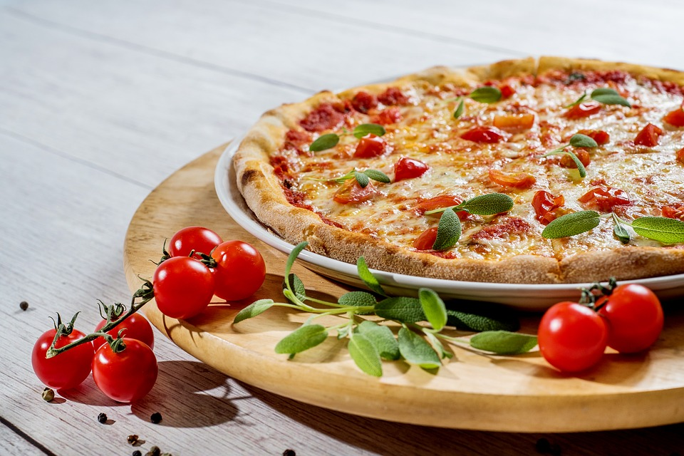

Restaurantul Gustosel va invita sa savurati intr-un cadru intim si linistit in acordul muzicii populare Moldovenesti, preparate din bucataria nationala. Ne-am propus sa aducem ceva nou in lumea restaurantelor traditionale Moldovenesti, impresionand clientii prin calitatea specialitatilor pregatite si prin ambientul rustic de elita al salonului. In interior , arhitectura rustica se juxtapune cu detaliile contemporane atat de evidente . Ideal pentru o atmosfera de vis intre prieteni sau in familie , Restaurant Gustosel va intampina intotdeauna cu profesionalism si o servire care poate multumi chiar si pe cel mai exigent client . Va oferim o gama larga de servicii pentru toate ocaziile, reprezentand garantia unei inalte calitati gastronomice si estetice, flexibilitate deplina in alcatuirea meniului cat si adaptarea lui la bugetul dumneavoastra, toate acestea fiind furnizate de o echipa de profesionisti cu experinta in domeniul gastronomiei. Seara de seara, ambianta eleganta si rustica a restaurantelelor este insufletita de o formatie de muzica populara si lautareasca, formatie ce reuseste sa transforme o seara obisnuita intr-una speciala.Restaurantul va sta la dispozitie pentru organizari de mese festive, cocktailuri, mese de afaceri, etc.

Înca de la deschidere, restaurantul Gustosel a fost locul preferat de intâlnire atât al Moldovenilor cât si
al turistilor ce tranziteaza orasul.
Situat într-o zona ferita de agitatia si traficul urban, restaurantul ofera o rafinata si încântatoare
atmosfera care reflecta caldura si ospitalitatea Moldovenilor. În timp ce privirile va vor fi furate de
numeroasele obiecte traditionale , (unele fiind considerate antichitati) ce decoreaza restaurantul
întregind astfel idea de restaurant autentic Moldovenesc, veti putea selecta din meniu, preparate
culinare pregatite cu maiestrie de sefi-bucatari renumiti, ce va vor fi servite în cel mai pur si autentic stil
Moldovenesc. Ne mândrim cu faptul ca în restaurantul “ Gustosel” produsele traditionale Moldovenesti,
(zacusca, sarmalele, salata de vinete, piftia, muraturile etc) sunt facute în casa de bucatarul nostru, dupa
retete autentice Moldovenesti.